Image editing and masking
Work with images using selections, masks, cutouts, and object removal. Optional local AI supports selection and reconstruction workflows with results available for review.
Creative technology
Work in progress · Private repositoryCreative tools shaped around the person using them.
L0CAL STUDIO is an evolving Windows application for exploring images, color, and motion. It brings editing, palettes, pixel art, effects, and animation together in a creative workspace designed for discovery.
The workspace
Work with images using selections, masks, cutouts, and object removal. Optional local AI supports selection and reconstruction workflows with results available for review.
Extract palettes from images at different color counts, apply them to artwork, and explore palette options through the Lospec browser.
Explore different image resolutions and palette choices to create pixelated interpretations and experiment with limited colors.
Layer photographic and creative effects, including exposure, color adjustments, RGB split, halftone, distortion, and other visual treatments.
Capture and arrange frames on a timeline, adjust playback, and explore GIF creation alongside the other creative tools.
Move images between workspaces, review changes, and develop ideas across editing, color, effects, and motion.
In development
The project brings together my interests in art, design, creative technology, and the relationship between tools and the people who use them. I guide its direction, design, and testing, using AI assistance in development.
Current work includes refining selection and reconstruction quality, balancing image detail with responsiveness, and making controls and previews easier to understand. Testing reveals where an idea works and where it needs further refinement.
L0CAL STUDIO remains an active preview. Its source repository is private while the application evolves; these examples show the real workspace rather than a finished product.
Inside the application
Screenshots show work in progress, including selections, palette experiments, effects, and the animation timeline. Select an image to view it larger.
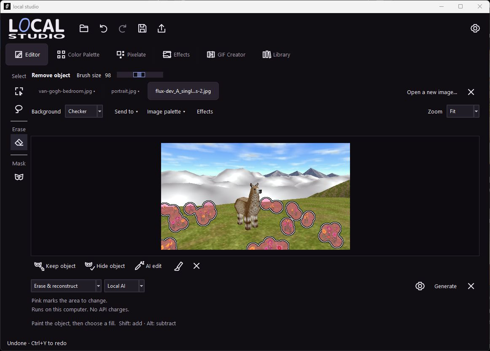
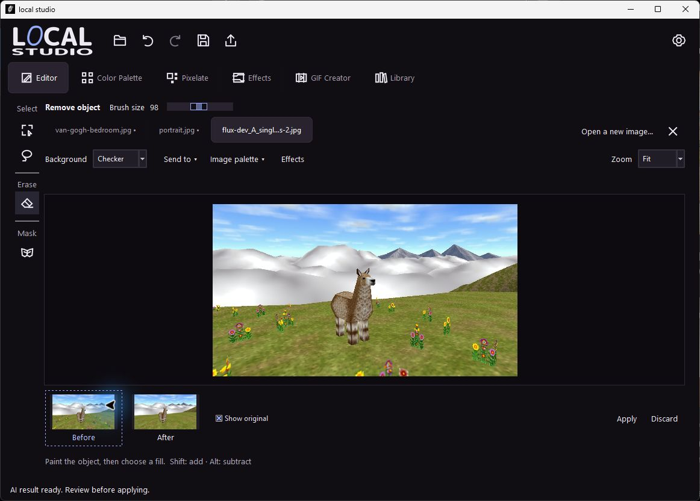
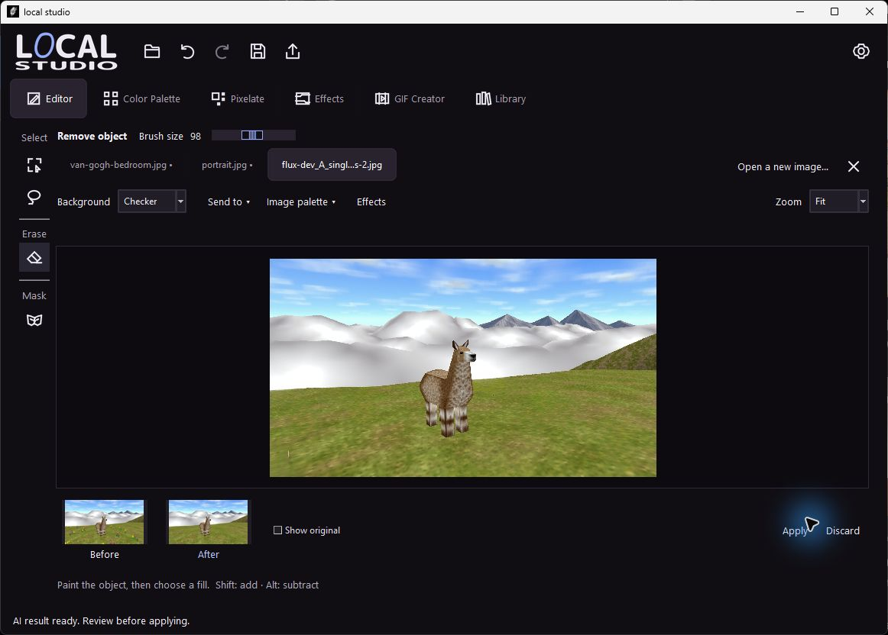
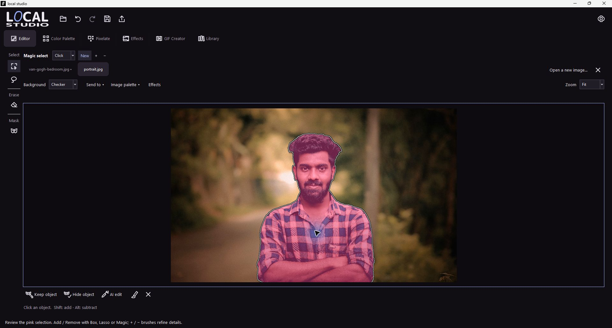
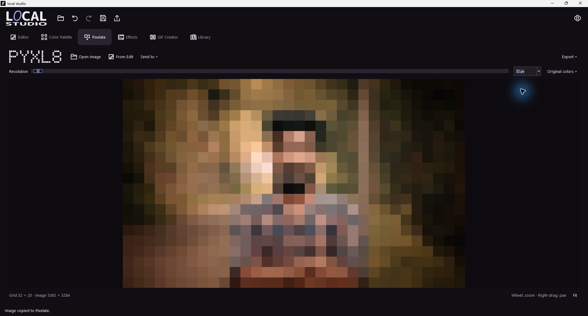
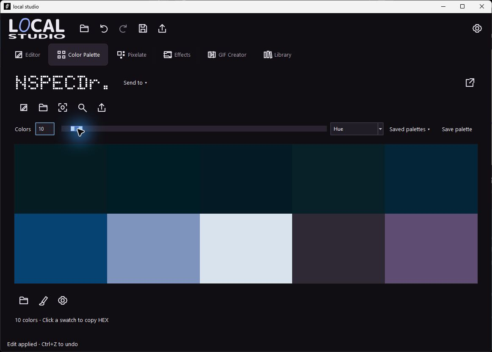
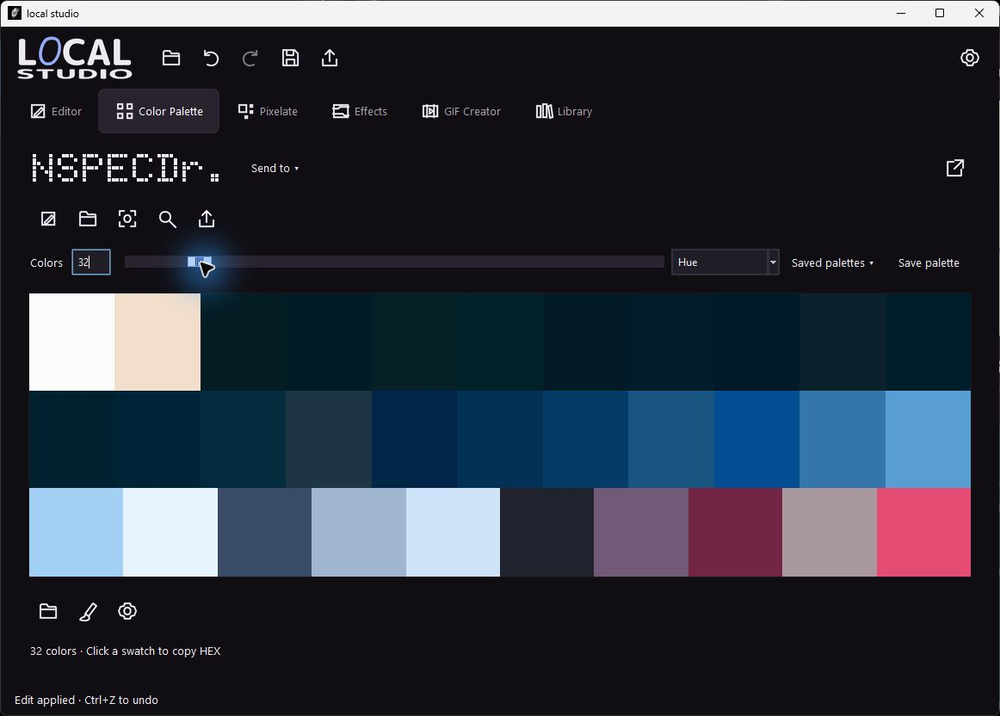
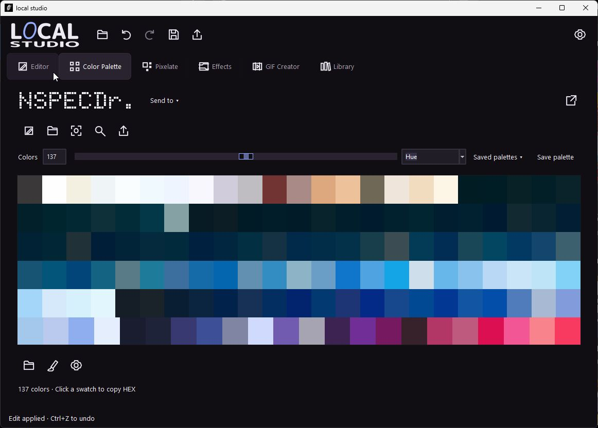
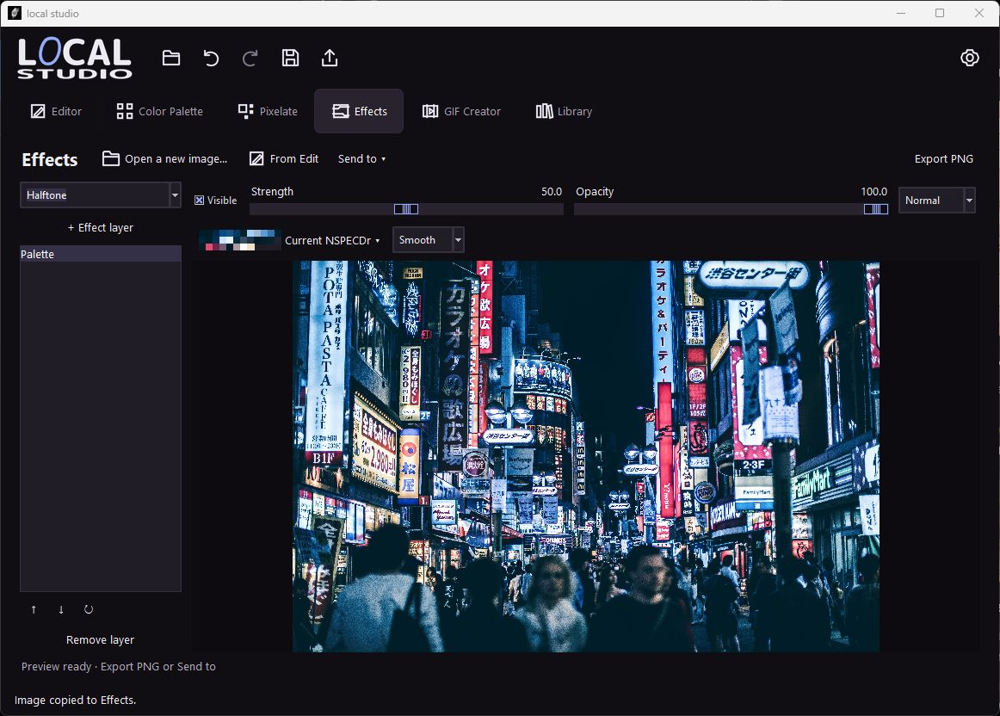
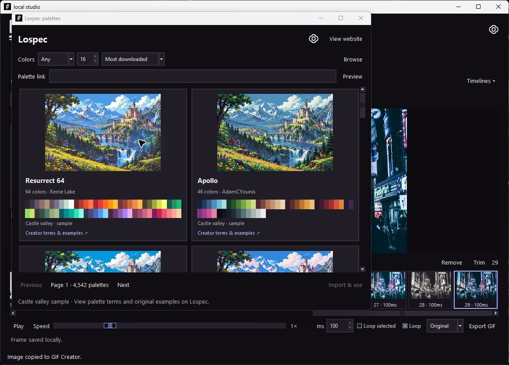
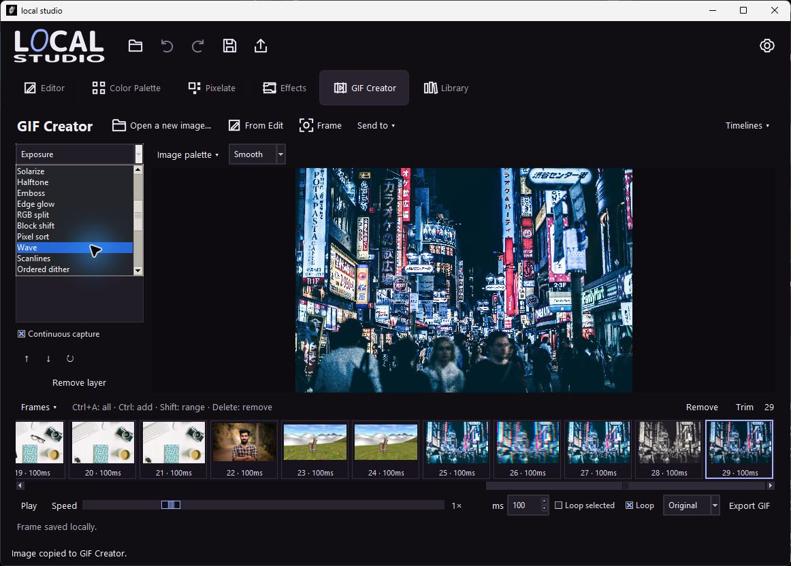
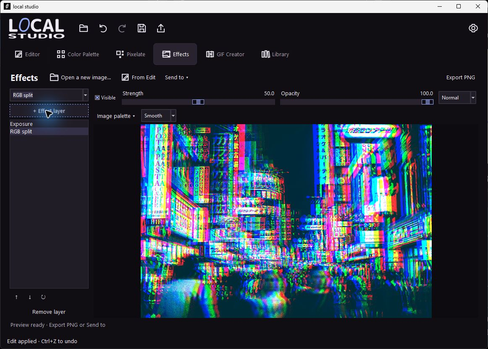
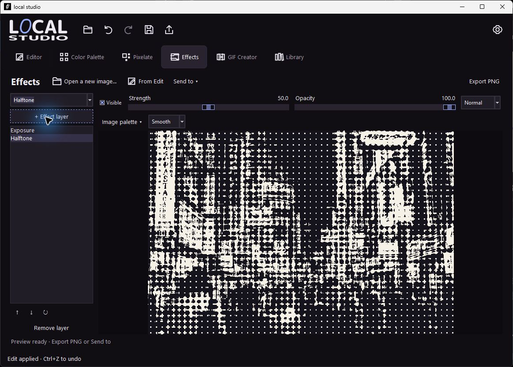
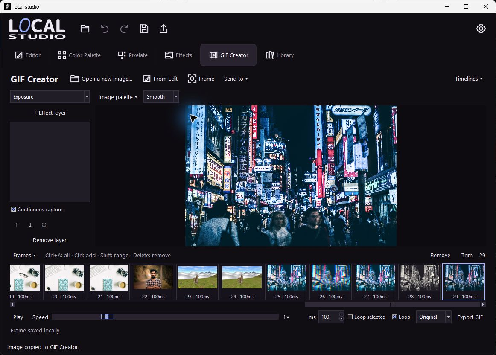
Shibuya photograph by Andre Benz, CC0. Portrait by Abhi Puthenpurackal, CC0. Llama scene artwork courtesy of the artist. The Lospec browser includes the application's palette preview sample.